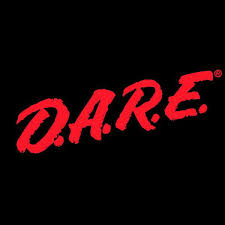

The devil is playing truth or dare with your life...
Stick to the truth of God's Word!
(John 8:31-32) Then said Jesus to those Jews which believed on him, If ye continue in my word, then are ye my disciples indeed; 32 And ye shall know the truth, and the truth shall make you free.